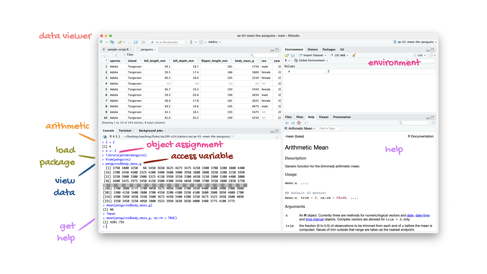
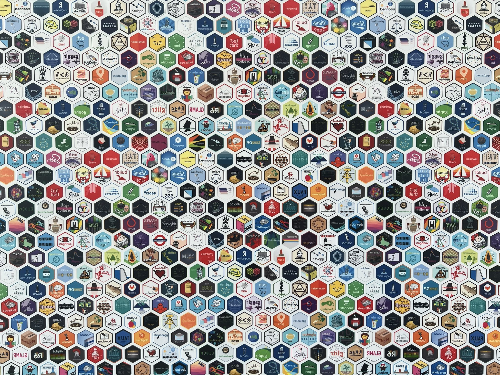

do_this(to_this)
do_that(to_this, to_that, with_those)Meet the toolkit
Lecture 1
Warm-up
Announcements
If you have not yet completed the Getting to know you survey, please do so asap!
If you have not yet accepted the invite to join the course GitHub Organization (I’m looking at 41 of you as of this morning!), please do so asap!
Office hours + locations linked at https://sta199-s24.github.io/course-team.html, come say hi to me or any of the TAs!
From last time…
Course homepage
Let’s take a tour!
Collaboration policy
Only work that is clearly assigned as team work should be completed collaboratively.
Homeworks must be completed individually. You may not directly share answers / code with others, however you are welcome to discuss the problems in general and ask for advice.
Exams must be completed individually. You may not discuss any aspect of the exam with peers. If you have questions, post as private questions on the course forum, only the teaching team will see and answer.
Use of generative AI
Treat generative AI, such as ChatGPT, the same as other online resources.
Guiding principles:
(1) Cognitive dimension: Working with AI should not reduce your ability to think clearly. We will practice using AI to facilitate—rather than hinder—learning.
(2) Ethical dimension: Students using AI should be transparent about their use and make sure it aligns with academic integrity.
✅ AI tools for code: You may make use of the technology for coding examples on assignments; if you do so, you must explicitly cite where you obtained the code. See the syllabus for guidelines for citing AI-generated content.
❌ AI tools for narrative: Unless instructed otherwise, you may not use generative AI to write narrative on assignments. In general, you may use generative AI as a resource as you complete assignments but not to answer the exercises for you.
Academic integrity
To uphold the Duke Community Standard:
I will not lie, cheat, or steal in my academic endeavors;
I will conduct myself honorably in all my endeavors; and
I will act if the Standard is compromised.
Most importantly!
Ask if you’re not sure if something violates a policy!
Five tips for success
Complete all the preparation work before class.
Ask questions.
Do the readings.
Do the lab.
Don’t procrastinate – at least on a weekly basis!
Course toolkit
Course toolkit
Course operation
- Materials: sta199-s24.github.io
- Submission: Gradescope
- Discussion: Ed Discussion
- Gradebook: Canvas
Doing data science
- Computing:
- R
- RStudio
- tidyverse
- Quarto
- Version control and collaboration:
- Git
- GitHub
Toolkit: Computing
Learning goals
By the end of the course, you will be able to…
- gain insight from data
- gain insight from data, reproducibly
- gain insight from data, reproducibly, using modern programming tools and techniques
- gain insight from data, reproducibly and collaboratively, using modern programming tools and techniques
- gain insight from data, reproducibly (with literate programming and version control) and collaboratively, using modern programming tools and techniques
Reproducible data analysis
Reproducibility checklist
What does it mean for a data analysis to be “reproducible”?
. . .
Short-term goals:
- Are the tables and figures reproducible from the code and data?
- Does the code actually do what you think it does?
- In addition to what was done, is it clear why it was done?
. . .
Long-term goals:
- Can the code be used for other data?
- Can you extend the code to do other things?
Toolkit for reproducibility
- Scriptability \(\rightarrow\) R
- Literate programming (code, narrative, output in one place) \(\rightarrow\) Quarto
- Version control \(\rightarrow\) Git / GitHub
R and RStudio
R and RStudio

- R is an open-source statistical programming language
- R is also an environment for statistical computing and graphics
- It’s easily extensible with packages

- RStudio is a convenient interface for R called an IDE (integrated development environment), e.g. “I write R code in the RStudio IDE”
- RStudio is not a requirement for programming with R, but it’s very commonly used by R programmers and data scientists
R vs. RStudio

Source: Modern Dive.
R packages
Packages: Fundamental units of reproducible R code, including reusable R functions, the documentation that describes how to use them, and sample data1
As of 15 January 2023, there are 20,252 R packages available on CRAN (the Comprehensive R Archive Network)2
We’re going to work with a small (but important) subset of these!
1 Wickham and Bryan, R Packages.
Tour: R + RStudio
Option 1:
Sit back and enjoy the show!
Option 2:
Clone the corresponding application exercise repo and follow along.
ae-01-meet-the-penguins
Go to the course GitHub organization and clone ae-01-meet-the-penguins to your container.
Tour recap: R + RStudio

A short list (for now) of R essentials
- Functions are (most often) verbs, followed by what they will be applied to in parentheses:
. . .
- Packages are installed with the
install.packages()function and loaded with thelibraryfunction, once per session:
install.packages("package_name")
library(package_name)R essentials (continued)
- Columns (variables) in data frames are accessed with
$:
dataframe$var_name. . .
- Object documentation can be accessed with
?
?meantidyverse

- The tidyverse is an opinionated collection of R packages designed for data science
- All packages share an underlying philosophy and a common grammar
Quarto
Quarto
- Fully reproducible reports – each time you render the analysis is ran from the beginning
- Code goes in chunks narrative goes outside of chunks
- A visual editor for a familiar / Google docs-like editing experience
Tour: Quarto
Option 1:
Sit back and enjoy the show!
Option 2:
Clone the corresponding application exercise repo (if you haven’t yet done so) and follow along.
ae-01-meet-the-penguins
Go to the course GitHub organization and clone ae-01-meet-the-penguins to your container.
Tour recap: Quarto

Environments
Important
The environment of your Quarto document is separate from the Console!
Remember this, and expect it to bite you a few times as you’re learning to work with Quarto!
Environments
First, run the following in the console:
x <- 2
x * 3All looks good, eh?
Then, add the following in an R chunk in your Quarto document
x * 3What happens? Why the error?
How will we use Quarto?
- Every application exercise, lab, project, etc. is an Quarto document
- You’ll always have a template Quarto document to start with
- The amount of scaffolding in the template will decrease over the semester
What’s with all the hexes?
